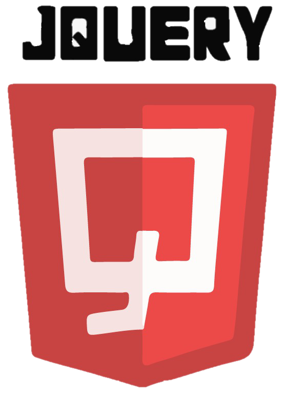
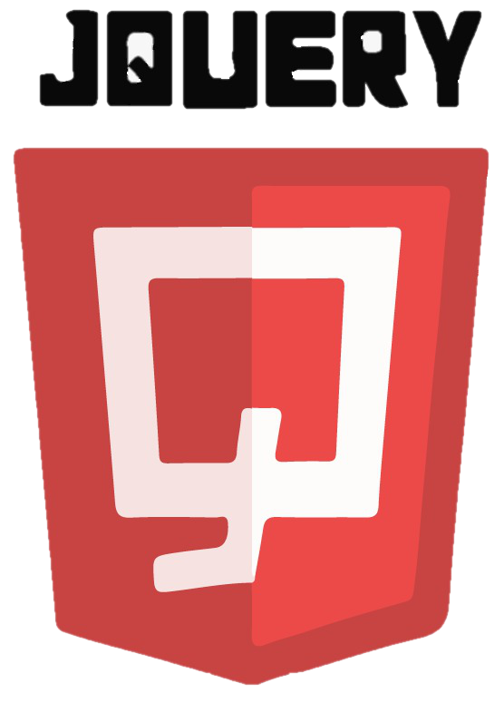

¿Qué es JQuery?
jQuery es una biblioteca de JavaScript que simplifica la forma de desarrollar aplicaciones web. Las aplicaciones que utilizan jQuery abarcan menor tiempo y menores líneas de código en comparación a las aplicaciones implementadas con solamente JS. Permite manipular elementos del DOM(textos, imágenes, enlaces, etc.) así mismo cambiar el diseño CSS o realizar peticiones Ajax utilizando instrucciones simples, por medio de un código fuente muy eficiente y sencillo. EL propósito de jQuery es facilitar el uso de JavaScript en un sitio web.
Las características que contiene jQuery son:
JQuery puede ser integrado en una página web simplemente en un documento de JavaScript vinculandolo a una copia local de la siguiente manera:

La interfaz de JQuery está compuesta por funciones, métodos y utilidades estáticas. En el caso de las funciones, este provee dos tipos, las funciones de utilidad estática y los métodos de objeto, ambas son accesadas por el identificador principal jQuery.
Utiliza la sintaxis de estilo de selector de CSS para recuperar elementos en el modelo de objeto de documento (DOM) en un conjunto de elementos envuelto, y luego manipular elementos en el conjunto envuelto con funciones jQuery para archivar
diferentes efectos.
La sintaxis de JQuery selecciona o consulta elementos HTML y realiza alguna acción en los elementos.
La sintaxis básica es la siguiente:


Por ejemplo:
Evento document ready
Esta función se utiliza para evitar que el código JQuery se ejecute antes de que el documento se cargue correctamente. Implementar este tipo de función es una buena práctica.

Así mismo el equipo de JQuery ha creado un método más corto para el evento de preparación de un documento, la cual es la siguiente:

Los selectores de JQuery se utilizan para buscar o seleccionar elementos HTML en función de su nombre, id, clases, tipos, atributos, valores de atributos etc. Cada selector de JQuery comienza con el signo dólar y paréntesis: $().
El selector de elementos selecciona elementos en función del nombre del elemento. Permite seleccionar todos los elementos de la etiqueta p que se encuentren dentro de la etiqueta body en una página, se expresa de la siguiente manera: $("p")
El usuario al hacer click en un botón, todos los elemento sde la etiqueta p se ocultaran se utiliza la siguiente función:

El selector de jQuery usa el atributo id de una etiqueta HTML para encontrar el elemento específico: #id. Para encontrar un elemento con una identificación especifíca, se utiliza el carácter hash(#), seguido por la identificación del elemento HTML, de la siguiente manera:

Ahora te mostraremos el resultado que tendría este ejemplo puedes interactuar con el resultado generado.
Buenos días .
Te deseo una feliz semana.
Buenas tardes.
Que le vaya bien.
Métodos de eventos de jQuery
En JQuery, la mayoría de los envetos DOM tienen un método de Java equivalente. Es por ello que te describiremos a continuación los método de eventos de jQuery más utilizados:
El método click() adjunta una función de controlador de eventos a un elmento HTML. La función se ejectura cuando el usuario hace clic en el elemento que se encuentra en HTML.
El método dblclick() permite que su función se ejecuta cuando el usuario hace doble clic en el elemento que se encuentra en HTML.
El método mouseenter() permite que su función se ejecute cuando el puntero del mouse ingresa al elemento HTML.
El método mouseleave() permite que la función se ejecute cuando el puntero del mouse sale del elemento HTML.
El método focus() adjunta una función de controlador de eventos a un campo de formulario HTML. El objetivo de la función es cuando el campo del formulario se enfoca.
El método blur() se ejecuta cuando el campo del formulario pierde el foco.
Animación con JQuery
Con ayuda de JQuery puede crearse animaciones personalizadas.
Método animate()
La sintaxis del método animate es la siguiente:

Uso de valores predefinidos
Se puede especificar el valor de animación de una propiedad como:

JQuery-Método CSS()
El método css() establece una o más propiedades de estilo para los elementos seleccionados.
Para devolver el valor de una propiedad CSS especifíca, se utiliza la siguiente sintáxis:

Para establecer una propiedad CSS especifíca, se utiliza la siguiente sintáxis:

Para establecer varias propiedades de CSS, se utiliza la siguiente sintaxis:

Video de JQuery
En este primer video se te enseña usar las animaciones en JQuery. En la siguiente sección te compartiremos el código que se uso para hacer posible está función. Podrás interactuar con él ingresando a la plataforma de CodePen.
En este segundo video se te enseña a crear filtros de búsqueda con JavaScript igualmente algunos de los operadores más usados. En la siguiente sección te compartiremos el código que se uso para hacer posible está función. Podrás interactuar con él ingresando a la plataforma de CodePen.
Ejemplo de JQuery
Te compartimos el código realizado en el video sobre el ejercicio de Animación básica con JavaScript puedes ejecutarlo para visualizar el resultado final, también obtener una copia del código utilizado. Puedes editar los parámetros ingresando a la plataforma de CodePen. Esperamos te sea útil!
See the Pen JQuery Ejemplo by Luisa Núñez (@luisanunez1) on CodePen.
Te compartimos el código realizado en el video sobre el ejercicio de Filtro de búsqueda básico con JavaScript puedes ejecutarlo para visualizar el resultado final, también obtener una copia del código utilizado. Puedes editar los parámetros ingresando a la plataforma de CodePen. Esperamos te sea útil!